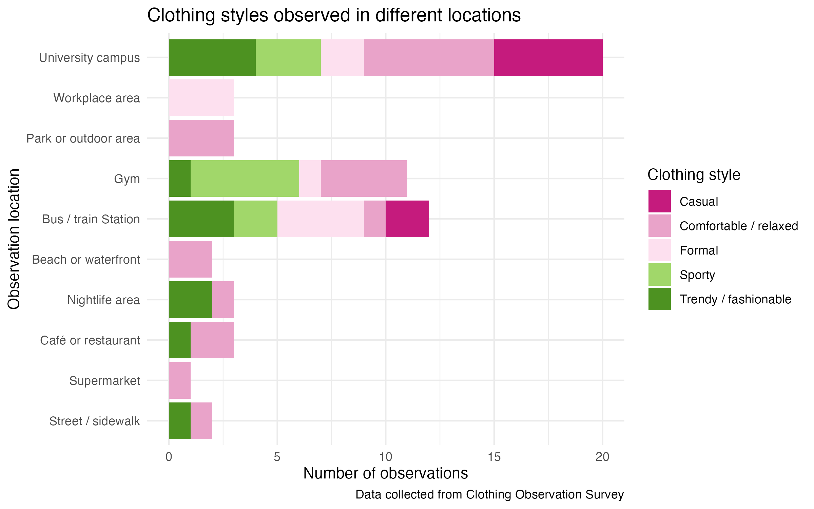
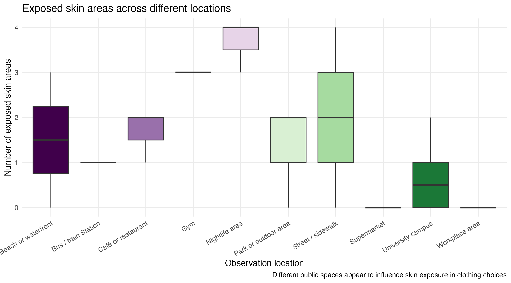
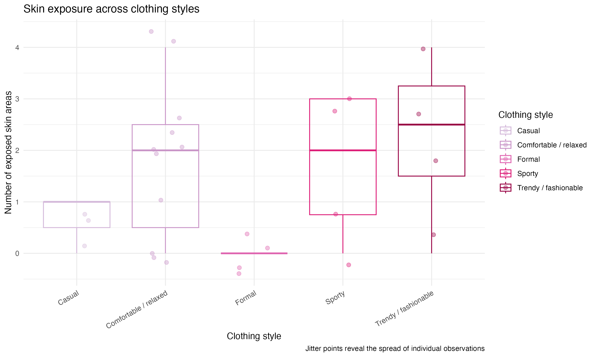
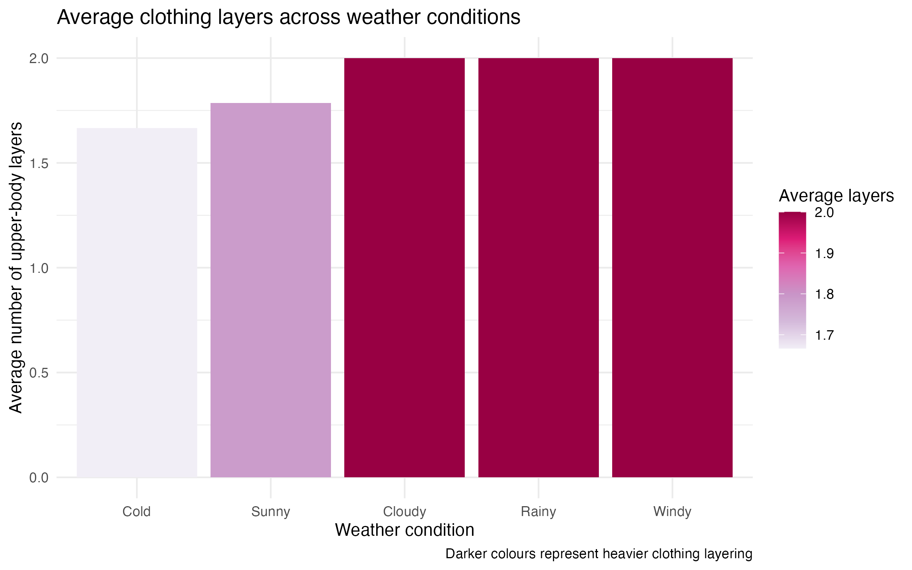
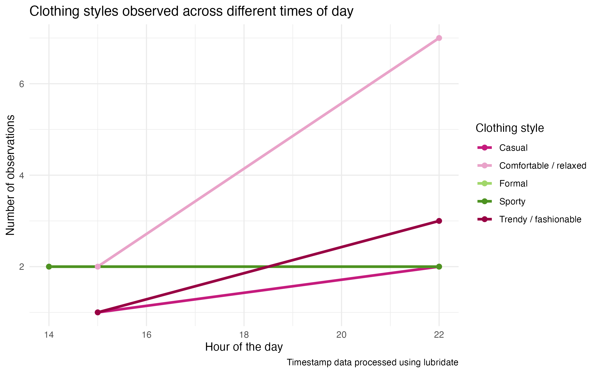
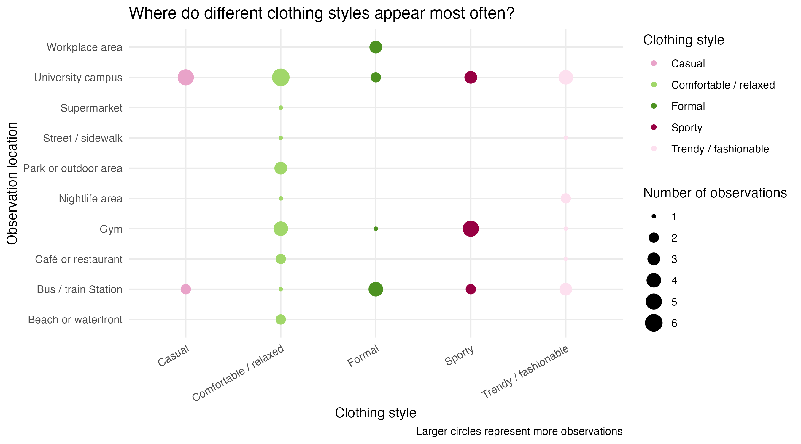
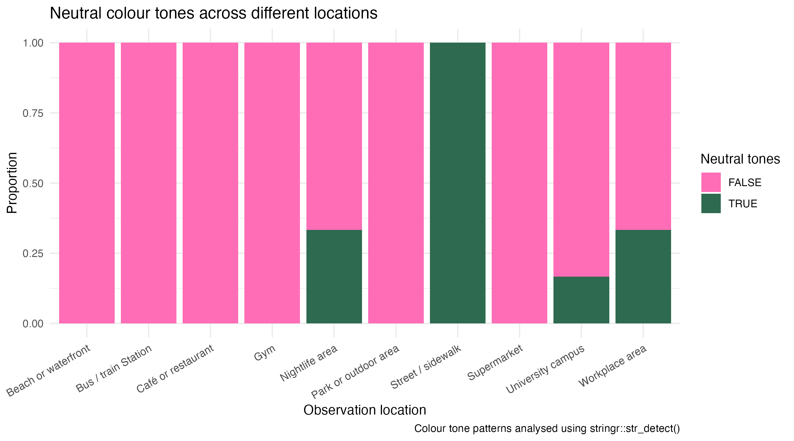

This visualisation compares clothing styles across different public spaces. University campuses showed the widest mix of clothing styles, including casual, sporty, and trendy outfits. This suggests that some environments allow greater flexibility in self-presentation and fashion choices.

This plot explores how exposed skin areas change depending on location. Places connected to movement, nightlife, or social activity appear to have higher levels of skin exposure, while more formal or practical environments appear more covered.

Different clothing styles appear to influence how much skin is visible. Sporty and fashionable styles tend to show more exposed skin areas, while formal clothing appears more conservative and covered.

This visualisation shows how weather conditions may influence layering choices. Rainy, cloudy, and windy conditions generally resulted in higher average clothing layers compared with sunnier weather.

This plot uses timestamp data to explore how clothing styles shift across different times of day. More relaxed or comfortable clothing styles appear more frequently later in the day.

This bubble chart explores where different clothing styles were observed most frequently across public locations. Larger circles represent higher numbers of observations. Comfortable or relaxed clothing styles appeared more often on university campuses, while sporty styles were more common in gym environments.

This plot explores how neutral colour tones appear across different
public locations. The data was manipulated using
stringr::str_detect() to identify outfits that included
neutral colour tones. Neutral colours appeared more frequently in
workplace and university settings, while more colourful outfits appeared
more often in outdoor and casual public spaces.